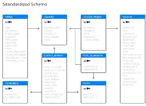

What is a database?
A database stores information in an organized way so you can find, update, and manage it efficiently. Many databases use tables made of rows and columns.
Quick comparison table
| Type | Example | Best for | Simple description |
|---|---|---|---|
| Relational (SQL) | MySQL | Structured data | Data stored in tables with relationships |
| Relational (SQL) | PostgreSQL | Apps needing strong data integrity | Advanced SQL features and reliability |
| NoSQL | MongoDB | Flexible / changing data | Document-style storage instead of tables |
External resource: MongoDB: Database Basics
Beginner tip
If you’re learning SQL, start with SELECT queries first. Once that clicks, add filters (WHERE) and sorting (ORDER BY).
Next: Contact / Questions